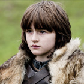

La Maison Stark
| Photo | Nom | Age | Histoire |
| Eddard Stark | 35 | Seigneur de Winterfell et Gardien du Nord. Ned Stark est réputé pour son sens de l'honneur et de la justice. il accepte la requête du roi pour servir en tant que Main du Roi. Il est exécuté sous ordre du Roi Joffrey après avoir été accusé de trahison suite à la découverte de la relation incestueuse de Cersei et de son frère. | |
|  | Brandon Stark | 17 | Il perd l’usage de ses jambes après avoir été précipité par la fenêtre pour avoir été témoin de la relation incestueuse entre Cersei et Jaime Lannister. Il découvre peu à peu qu'il parvient à contrôler l'esprit de son loup été, devenant un « Change-peau » Il fuit vers le Nord après la chute de Winterfell alors qu’il est présumé mort. |
 |
Catelyn stark | 35 | épouse de Ned Stark, née à Vivesaigues, elle est la sœur aînée de Lysa Arryn et d'Edmure Tully. Lorsque son époux est arrêté, elle rejoint le conseil de son fils Robb, qu'elle aide à lutter contre les Lannister. Elle est exécutée au cours du massacre des Noces Pourpres pour être finalement ramenée à la vie sous le nom de Lady Cœurdepierre et prend la tête de la Fraternité en lieu et place de lord Béric. |
| Arya Stark | 11 | Elle est plus intéressée par le maniement des armes que par l'art de la couture. Après la mort de son père elle fuit la capitale déguisée en orphelin elle rencontre Jaqen H'ghar qui lui offre trois vies en échanges de celles qu'elle a sauvé. Elle s'enfuit avec Clegane suite au Noces Pourpres et finira par rejoindre une guilde d'assassins, les Sans Visages de Braavos. | |
 |
Robb Stark | 14 | Aîné des enfants Stark, héritier de Winterfell, il est proclamé Roi du Nord lorsque son père est exécuté. Il épouse Talisa Maegyr venue de Volantis ce qui l’amènera à l’évenement des Noces Pourpres où il seront tous deux assassinés. |
 |
Rickon Stark | 27 | Cadet des Starks il fuit avec Bran après que Théon Greyjoy ait pris Winterfell. Il est par la suite pris en charge par Osha, une sauvageonne ancienne servante de Winterfell. Rickon se trouverait apparemment sur l'île de Skagos. |
 |
Sansa Stark | 20 | Promise à Joffrey Baratheon, l'héritier de la Couronne, elle devient otage lorsque son père est assassiné. Joffrey rompt leurs fiançailles pour choisir d'épouser Margaery Tyrell et elle est contrainte d'épouser Tyrion, sur les ordres de Tywin Lannister. |
 |
Jon Snow | 28 | Bâtard de Ned Stark, il s'engage dans la Garde de Nuit et devient l’intendant du Lord Commandant. Il part de l'autre côté du Mur pour une expédition où Il est chargé de découvrir le plan des Sauvageons qui le conduisent auprès de leur Roi Mance Rayder. Séduit par Ygritte il finit par choisir la loyauté et devient le nouveau Lord Commandant de la Garde de Nuit |